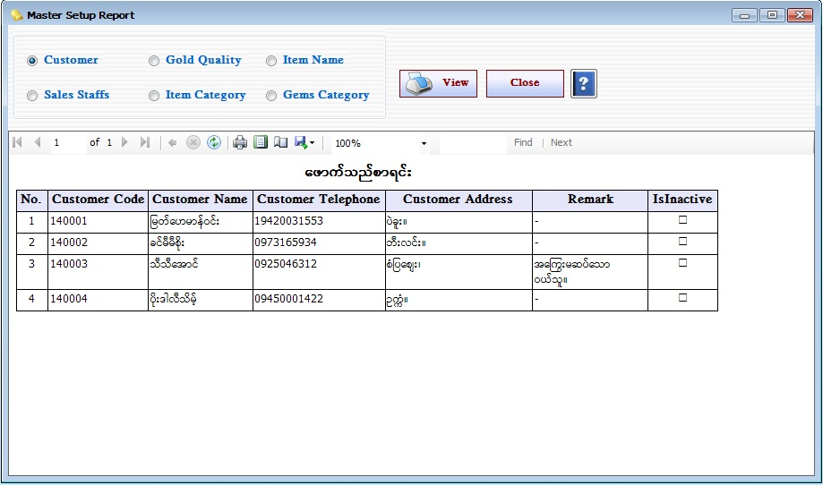

Master Setup Report

- Reports အောက်ရှိ Master Setup Report Form ကိုဖွင့်ပါ။
- Master Setup အောက်ရှိ Form များတွင် ဖြည့်သွင်းထားသော Data များကိုပြန်လည်ကြည့်ရှုခြင်းဖြစ်သည်။
- မိမိကြည့်ရှုလိုသည့် Form ကို on လိုက်ပါ။
- ဥပမာ- အသုံးပြုသူသည် Customer များကိုကြည့်ရှုလိုပါက Customer Button ကို on ပါ။
- ထို့နောက် View Button နှိပ်၍ ဖောက်သည်စာရင်း (Customer) များကိုကြည့်ရှုနိုင်ပါသည်။
- ထိုနည်းတူ အခြားသော Form များကိုရွေးချယ်ကြည့်ရှုနိုင်ပါသည်။